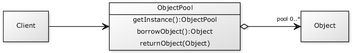
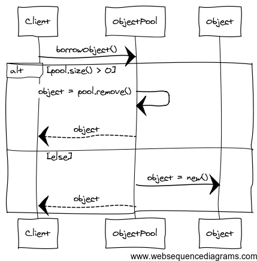
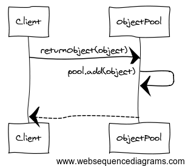

design patterns in action
www.gdgpardubice.cz
Úkol - výherce
Dnes není
Composite
Struktura sjednocující typy používaných objektů a zajišťující tak jejich snadné zpracování nezávisle na tom, o jaký objekt se jedná a jestli je atomický nebo není.
UML

Příklady použití
- Třídy pro přístup k souborům,
- GUI, kde prvky mají stejného rodiče,
- mapové podklady, zaznamenávající obce a komunikace,
- struktura kategorií a článků v RS.
Požadavky
- Stejný rodič pro všechny prvky struktury.
- Rodič definuje společné operace.
Vzor Composite použijete, když máme objekty, které
- potřebujeme hierarchicky řadit,
- mezi sebou mají vazby, které chceme naznačit.
Vzor Composite použijeme, když chceme
- pracovat se všemi objekty stejně,
- procházet celou hierarchií jasně definovanými cestami,
- rekurzivně zpracovávat velké množství dat,
- pracovat s celou strukturou po částech.
Jdeme kódit!
Shrnutí
Composite nemusí být jen stromovou strukturou, tak jak ji známe z matematiky.
Umožňuje pracovat s rozdílnými prvky stejným způsobem.
Neomezujte se při návrhu jen na atomické prvky & společné rozhraní prvků definujte co nejrozsáhlejší.
Pool
Pool (Fond nebo Bazén) použijeme ve chvíli, kdy chceme omezit počet instancí objektu, ale na druhou stranu nechceme vytvářet nové objekty a dáváme přednost "reinkarnaci" objektu.
UML
UML
UML
Příklady použití:
Objekty pro náročné výpočetní úlohy,
připojení k databázi,
typicky náročné systémové úlohy, které se dají znovupoužít.
Požadavky
Pool musí efektivně spravovat své zdroje.
Pool musí nabízet API pro získání a odevzdání objektu.
Jdeme kódit!
Shrnutí
Pool využijeme, pokud je výhodnější použít již jednou vytvořenou instanci objektu, než vytvářet novou instanci.
Pool můžeme využít tehdy, pokud chceme omezit maximální počet vytvářených instancí.
Tričko?
Za úkol!
Zadání
Navrhněte aplikaci, která bude využívat vzor Composite a bude uchovávat zaměstnaneckou strukturu fiktivní firmy. Firma bude mít několik druhů zaměstnanců (ředitel, uklízečka, brigádník, vývojář, nástěnkář apod.) a pomocí vzoru Composite bude zajištěno zjišťování informací o zaměstnancích, vypsání všech, správné zařazení do struktury a případně další operace (snížení platu apod.).
Autor nejrychleji odevzdané práce a autor nejlepší implementace bude odměněn.
Odevzdání: info@gdgpardubice.cz
Feedback
Prosím vyplňte krátký feedback:
gdgpardubice.cz/go/dpa5